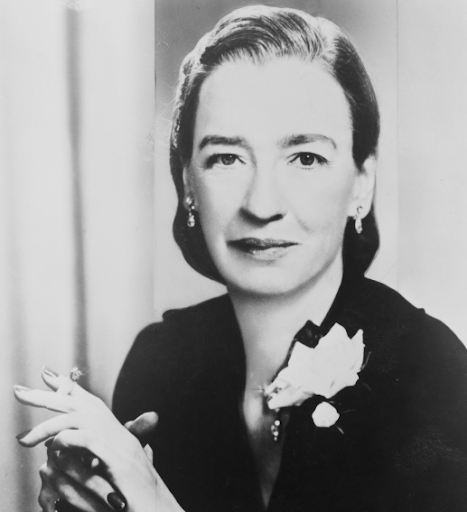

Ada Lovelace
A britânica Ada Lovelace foi a primeira programadora da história. Ela viveu por apenas 36 anos, até 1852, mas foi ela quem previu que os computadores fariam mais do que simples cálculos matemáticos, criando o primeiro algoritmo capaz de ser processado por uma máquina. Apesar de não possuir os recursos necessários na época para testar seus estudos, o seu trabalho foi validado posteriormente à sua morte, quando os equipamentos necessários tornaram-se disponíveis. Atualmente, a Sociedade Britânica de Computação conta com um prêmio que leva o seu nome e coloca em evidência avanços significativos em sistemas de informação.
Grace Hopper
Sabe quando “dá um bug” no computador? Uma curiosidade sobre Grace Hopper é que foi por causa dela que começamos a chamar as falhas de “bug”. Isso porque Grace, ao tentar encontrar a origem de um problema em seu computador, descobriu um inseto morto dentro da máquina. Mas a maior contribuição de Hopper sem dúvida foi durante sua atuação como analista de sistemas da Marinha dos Estados Unidos, nas décadas de 1940 e 1950. Ela ficou conhecida como “vovó do COBOL” por ter desenvolvido a base para a Common Business Oriented Language, usada até a atualidade no processamento de bancos de dados comerciais. Por sua grande contribuição, desde 1994 é realizado em sua homenagem o congresso Grace Hopper Celebration of Women in Computing, que celebra os feitos das mulheres no mundo da computação anualmente.

Marry Kenneth Keller
Mary Kenneth Keller foi uma freira e também a primeira mulher a conquistar um doutorado em Ciências da Computação. Em sua biografia, destaca-se a importante participação na criação da linguagem de programação BASIC, a autoria de quatro livros que são referência em computação e programação, além da fundação de um departamento de ciências da computação na Universidade Clarke, onde atuou como diretora até falecer em 1985. Muito envolvida com a educação, há registros de suas ideias visionárias sobre como o computador seria essencial para auxiliar as pessoas no aprendizado, além daquelas acerca da inteligência artificial, em uma época em que só se achava o tema na ficção científica.